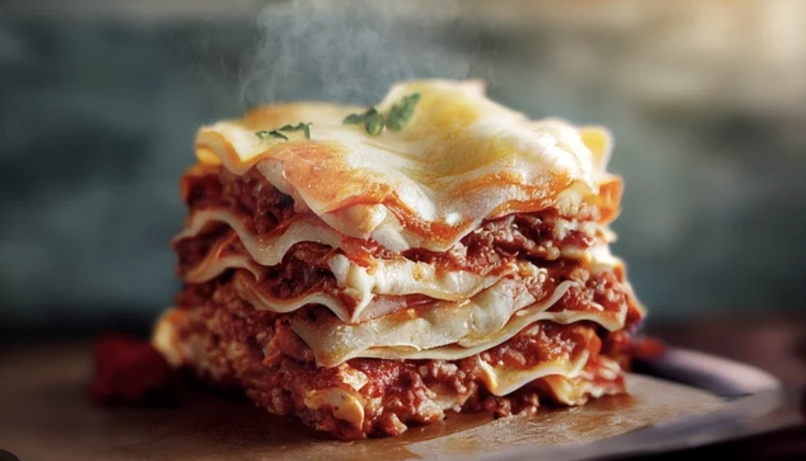

Lasagna

Description
Lasagna is a classic Italian dish made from layers of flat pasta, meat-based sauce (often with ground beef or pork), creamy cheese like ricotta or béchamel, and topped with melted mozzarella and Parmesan. It's baked to golden perfection, offering a delicious combination of soft pasta, rich meat, and savory cheese flavors. This hearty dish is perfect for gatherings, as it can be prepared in large portions and served easily.
Ingredients
- 12 lasagna noodles
- 1 jar (24 oz) marinara sauce
- 2 cups ricotta cheese
- 4 cups shredded mozzarella cheese
- 1/4 cup grated Parmesan cheese
- 1 egg
- 2 medium zucchini (sliced)
- 1 large eggplant (sliced)
- 1 cup spinach (fresh or frozen)
- 1 onion (chopped)
- 3 cloves garlic (minced)
- Olive oil
- Salt, pepper, Italian herbs (basil, oregano)
Steps
- Preheat the oven to 375°F (190°C).
- Boil the lasagna noodles according to the package directions. Drain and set aside.
- Sauté the vegetables: In a large pan, heat olive oil over medium heat. Sauté the onion and garlic until soft. Add the sliced zucchini, eggplant, and spinach, and cook until tender. Season with salt, pepper, and Italian herbs.
- Prepare the cheese mixture: In a bowl, mix the ricotta cheese, egg, 2 cups of shredded mozzarella, and half of the Parmesan cheese.
- Layer the lasagna: In a 9x13 inch baking dish, spread a thin layer of marinara sauce. Add a layer of noodles, spread the cheese mixture on top, followed by a layer of sautéed vegetables. Repeat the layers (noodles, cheese, vegetables, sauce), ending with sauce on top.
- Top with mozzarella and Parmesan: Sprinkle the remaining mozzarella and Parmesan over the top layer.
- Bake for 25-30 minutes until the cheese is melted and bubbly. Broil for 2-3 minutes for a golden top if desired.
- Let it rest for 10 minutes before serving.